Basics of Chainmaille
Introduction to the materials and equipment
Before you even pick up your pliers to start weaving chainmaille, you must either find or become a source for rings. This tutorial demonstrates how to make rings for various purposes, and some of the other things you will need to know to start your chainmaille career.The first thing you need for chainmaille, as said, is rings (or links; "circles" works too, but that's not a conventional name). Of course, you can call up a chainmaille supplier if you want, but that can be expensive if you're not even sure that you want to keep going with chainmaille. Making your own links is fairly easy and, once you've got the basic equipment, it is only as expensive as the wire you use to make them.
Wire is the first thing you need. Galvanized steel is cheap, easy to acquire, and easy to work with, so it is recommended for a beginner. Rustle around your basement, go dumpster-diving, or if you're willing to put down a few bucks for a fresh 100 yd spool, go to your local hardware store. I find that I work mostly with 14 and 16 ga wire; these are good gauges to start with, and, along with 17 ga, are the easiest to find in galvanized steel. (I'm not going to get into the finesse of the various gauge systems here; it's such a headache, and besides, if you get to the point where you really care about wire diameter, you'll use absolute decimal measurements.)
Once you've got your wire, you need to set up a mandrel. This is easy. Find a long board (three feet maybe; use something cheap but sturdy, like plywood or bottom-of-the-line maple.) At each end, nail down a block of wood with a hole drilled through each at the same height. Here is a picture of mine:
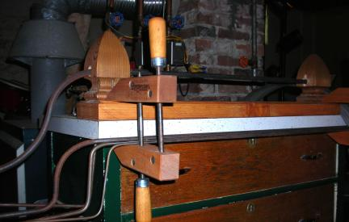
It's a little showy, with the wood finials instead of simple blocks, and a nice stain to finish it. Yours doesn't have to be anywhere near this fancy.
To complete the mandrel, you need a long bar. Use steel, not a wooden dowel, because the wood will compress over time and result in smaller-diameter rings each time. The rod should be a little over a foot longer than the base board -- most hardware stores (the novice mailler's best friend) carry bar stock in three-foot lengths. I recommend 7/16" or 3/8" diameter to begin with; you can always add to your collection.
Bend one end into a crank. To do this, start about a foot from the end and make a 90 degree angle. You'll want access to a vice grip for this, especially if you're using a 7/16" diameter rod or larger. (I really don't recommend 1/2", because you just won't be able to make a nice bend.) Notching the metal slightly with a hacksaw can help if it's being stubborn. Make a second 90 degree angle about six inches from the end, in the opposite direction from the first. So, it should look something like this:
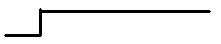
Once you've bent the mandrel, slip it through the two holes in the upright blocks of wood, all the way up to the first bend of the crank. Make a mark on the bar, about an inch from where it emerges from the block of wood on the crank end. In other words, here:
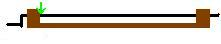
The extra inch is to allow room for the crank to rotate, so that it doesn't rub right against the wood.
Take out the bar and find the mark. On that spot, drill a small hole all the way through the bar. This is where you will insert the wire end for winding links, so make the hole big enough to accommodate the wire gauge you are using.
That's all there is to the mandrel. Once you have this part done, you are ready to wind links. Clamp the mandrel down onto a table or desk or something, because you won't want it moving around while you wind links.
It must first be understood that you do not wind links one at a time. Rather, you make a long coil of wire, which is then cut into links. The mandrel is for making the coil. To do this, take the end of the wire and insert it into the hole you drilled in the steel bar. You don't need to put much wire through; just so that the end is visible on the other side of the bar. Then, feeding the wire through your hand, start turning the crank. Take it slowly until you get comfortable feeding the wire; you want to keep the coil even. Avoid big gaps in the coil, and also avoid overlapping the wire. You may want to wear a glove on the hand you use to feed the wire, just to avoid injury from the wire rubbing directly against your skin.
Make the coil as long as you like, but if you fill the entire space between the wood blocks, it may be difficult to get the coil off. The longer the coil, of course, the more links you will get out of it. Once you have finished winding the coil, snip off the leftover wire. You can then either pry the wire end out of the hole drilled in the mandrel, or cut it off. Then draw the crank out of the wood blocks, simultaneously pulling off the coil, et voila! Your first coil of links!
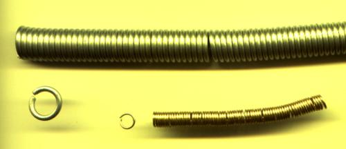
Next you must cut the coil into links. There are various tools you can use for this. My favorite cutters are a pair of cable cutters from Ace Hardware. Wiss M5 aviation snips are also quite popular. Both of these will produce a nice, clean flush cut, with the ends like so: //. You can also use diagonal cutters (cuts like so: ><), which I find are hard to use and do not produce very nice cuts. If you don't care about cuts and just want something that will give you good leverage, 8" bolt cutters are another popular tool. I don't recommend them for jewelry (at all, ever), but they are excellent for big, steel armor rings.
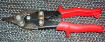
Wiss M5 Aviation Snips
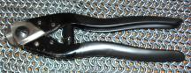
Cable Cutters
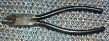
Diagonal Cutters
All right, you've got your mandrel, you've made a coil, you've cut it into links. All that remains is to start weaving. You'll want pliers for this, unless you made, like, 16 ga 3/4" ID links. (Those would be ridiculously big and weak, and useless for...everything, I think.) There are a whole lot of plier kinds out there, and no one type is necessarily better than the other. However I can give you a general idea of what to use for what.
Slipjaw pliers: I've never used these, but lots of people do, so I guess they must be pretty much all-purpose.
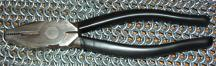
Linesman's pliers: Big pliers with a solid grip and blunt, toothed jaws. These are what I use when I'm dealing with 14 and 16 ga. I generally have one pair of these in my right hand, and a smaller pair of pliers in my left.
Needlenose pliers: Extremely long, narrow, tapering jaws. I use them so rarely, I don't even have a picture. If serrated, they are handy when you need good traction in a dense weave, like Elfweave or Half Persian 3-1 Sheet 6-1. Some people like to use them as their primary pliers, but I find that the nose is too long and narrow for a proper grip.
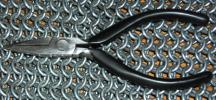
Chainnose pliers: Next to linesman's pliers, I use these pliers the most often. They have short, pointed jaws, not a long as needlenose pliers, and I've never seen any that had serrated jaws. I use them as left-hand pliers to complement my linesman's pliers, for 16 and 14 ga. I also use them when I work with jewelry links, because the smooth gripping surface doesn't scar the metal. For links 20 ga and under, I just use these whatever the metal because it's overkill to have a huge pair of pliers for something so small.
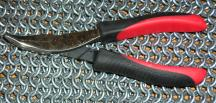
Bent-nose pliers: Similar to needle-nose, but with a 45º bend in the jaw. This effectively makes them a combination of chain-nose and linesman's pliers, depending on how you hold them. With the tip facing in toward the ring, they're chain-nosed; flip them over, and you can use the outer edge of the angle to get a solid linesman's-style grip. I have a pair of ACE brand bent-nose with serrated jaws that I really like. They are about the burliest 4" pliers that I have found yet, which makes them perfect for small but strong links, or to complement my linesman's pliers. And they have really nice, well-cushioned grips, always a plus.
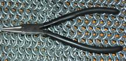
Roundnose pliers: I don't actually use these to bend links. I mean, you could, but they'd dent the metal and wouldn't even give you a particularly good grip. But they're useful for making neat loops on clasps and things, so if you think you may get into chainmail jewelry it's nice to have a pair of these around.
A final note: Metals
There are probably fifteen or twenty different metals out there that are good for chainmaille. That's a lot, when you think about it. So here's a quick guide to the most common metals.
Galvanized steel (steel with zinc coating): Cheap, strong, easy to acquire. Good for pretty much anything apart from jewelry; most people use it for practice. Dull greyish look to it, but can be blackened through various processes. It's notorious for its distinct odor, which some people don't mind but others can't stand. I've also noticed that my galvy armor leaves a really unpleasant sticky sensation after I've worn it for a couple of hours.
Stainless steel: Cheapish, strong, slightly harder to find in wire than galvanized. Good for anything, including basic jewelry. Bright grey, with almost a hint of brown, and it doesn't discolor under day-to-day circumstances. However, it can be colored with a torch, and a glossy blackened version can be bought (but not, to my knowledge, made at home).
Aluminum (or, depending on where you live, aluminium): A very lightweight, somewhat weak metal. Several kinds: all are generally carried by a chainmaille supplier, for a little more than the cost of steel. Good for jewelry, costume armor, or combat armor in a heavy enough gauge. Plain aluminum is light grey, rubs off dark residue. Bright aluminum is bright whitish-grey, and mostly clean. Etched aluminum, which has been bathed in acid to alter the surface of the metal, is dull whitish-grey and clean, but loses its etching to become plain aluminum over time.
Anodized aluminum: Aluminum whose surface has been treated to give it a color. It has the same workability properties as plain aluminum, but is slightly more expensive. Comes in several colors and is good for inlays and colorful jewelry. Also, due to the layer of anodization, it does not have any ruboff. The color does wear off after a year or two of use.
Copper: A pretty weak, heavier-than-steel, fairly cheap metal (but more expensive than steel), commonly stocked by hardware stores in a limited range of gauges. Good for jewelry, inlays, trim. Shiny reddish-pink color when polished, but tarnishes easily to dark brown and often leaves a greenish residue on skin.
Brass: Copper alloyed with zinc. Gold color that tarnishes to dark yellow, and the copper in it rubs off a greenish residue. Fairly cheap, moderately weak, fairly easy to acquire, just a little heavier than steel. Good for jewelry, inlays, trim.
Bronze: Copper alloyed with tin. Dark red color that tarnishes to dark brown. A weak but springy, reasonably cheap metal that is stocked by most chainmaille suppliers. Weight similar to brass. Good for inlays, trim, decorative armor, and jewelry.
Enameled copper: Copper with a thin, colored plastic coating. Dead-soft, reasonably cheap, to be found at a chainmaille supplier. Good for inlays, jewelery, trim, that kind of thing. Any color you can imagine, in jewel tones. Silvered enameled copper has a silver plating under the enamel layer, which shines through to produce even brighter colors.
Sterling silver: 92.5% silver, plus copper and sometimes a couple other base metals. Much more expensive than the basic metals like steel -- as of 4/17/08, encroaching on $20/oz -- but all jewelry suppliers should stock it in various gauges. It's the classic metal for jewelry, bright white when polished. Silver wire can also be gotten with a copper core, which is cheaper than solid sterling. Silver-plate wire is a thin layer of pure silver over a copper core, and with normal wear over time will show the copper beneath. Silver-fill is a silver tube filled with copper, and because of the thickness of the silver layer, it is much less likely to wear down to the core.
Gold: Quite weak, rather expensive, stocked by most jewelry suppliers. Best for jewelry, naturally. Bright yellow color. Like sterling silver, this can be gotten with a copper or brass core.
Craft wire: To my knowledge, this is no different from enameled copper, but I figured I'd list it nonetheless. Weak, easy to come by for a decent price at jewelry supply stores, Hobby Lobby, the like. Good for inlays, jewelry. Lots of colors, but stores usually only stock the basic ones -- red, green, blue, black, silver, gold.
Neoprene/EPDM rubber O-rings: Rings that are actually molded instead of coiled and cut, and so are permanently closed. Elasticy and extremely lightweight (rubber is half the weight of aluminum). They can only be ordered and not made at home, for obvious reasons. Some chainmaille suppliers stock them, as well as Fire Mountain Gems jewelry supplies (they call them Oh! rings). Can be woven into bracelets with regular metal rings to give an interesting stretch factor. Black, plus a few other basic colors are to be found. Unfortunately, they weaken over time, and after a year or two of wear they tend to break.
Titanium, niobium, inconel, etc: Very nice but expensive metals, hard to find except via a chainmaille supplier. Can be anodized to various colors depending on the metal concerned. Titanium in particular is light and strong, which makes it the uber armor metal; I think the others are only good for jewelry although I really am not familiar with their properties.
I know I've mentioned the words "chainmaille supplier" several times now, so I'll list a couple that I know of here.
The Ring Lord -- when I have to order links, this is where I go. He's got everything you can imagine and more. However, he is based in Saskatchewan, Canada, so beware the shipping if you don't happen to be in Canada or the US. theringlord.com
Blue Buddha Boutique -- Artist based in Chicago. I've heard good things about her anodized aluminum rings. She also sells finished pieces and does a lot of workshops. bluebuddhaboutique.com
Non-chainmaillle (wire and jewelry things):
Para Wire -- I drool over their mutiple gauges of craft wire. Ringlord has at least as many colors, but none above 19 ga; these folks stock up to 12 ga. Can you imagine? parawire.com
Fire Mountain Gems -- If you're interested in jewelry, here's a good place to go. They have a wide selection of beads, clasps, and findings, as well as the colored Oh! rings mentioned above. firemountaingems.com
And there are many others, of course, but I won't list them all here. For a more extensive list, including some based in the UK and Europe, I suggest the Links page of mailleartisans.org
Well I think that's just about everything you need to know to get started, if not a little more. Have fun and good luck!